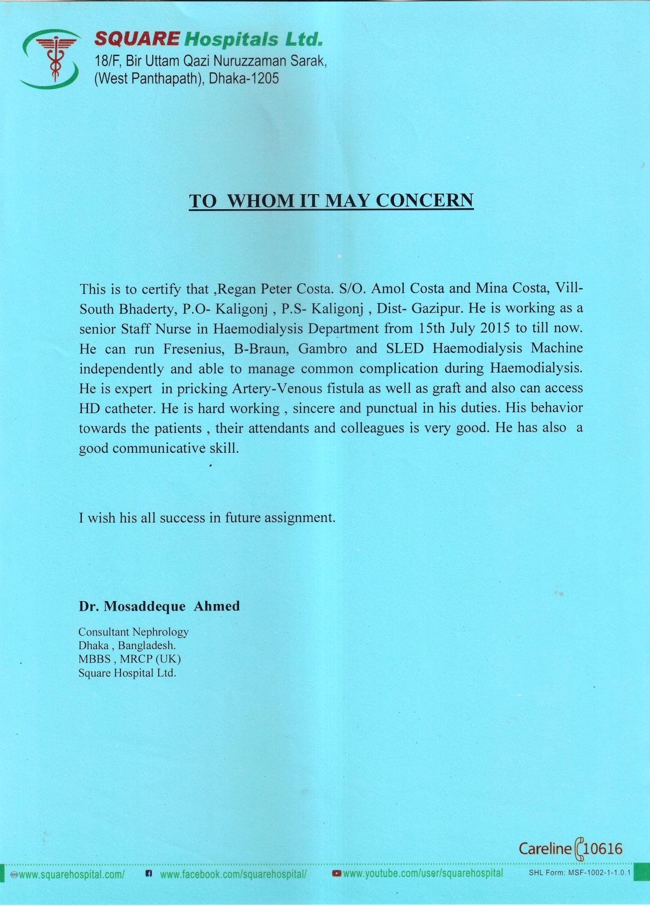
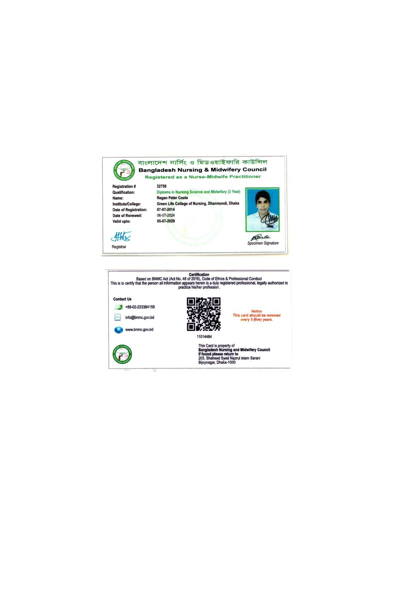
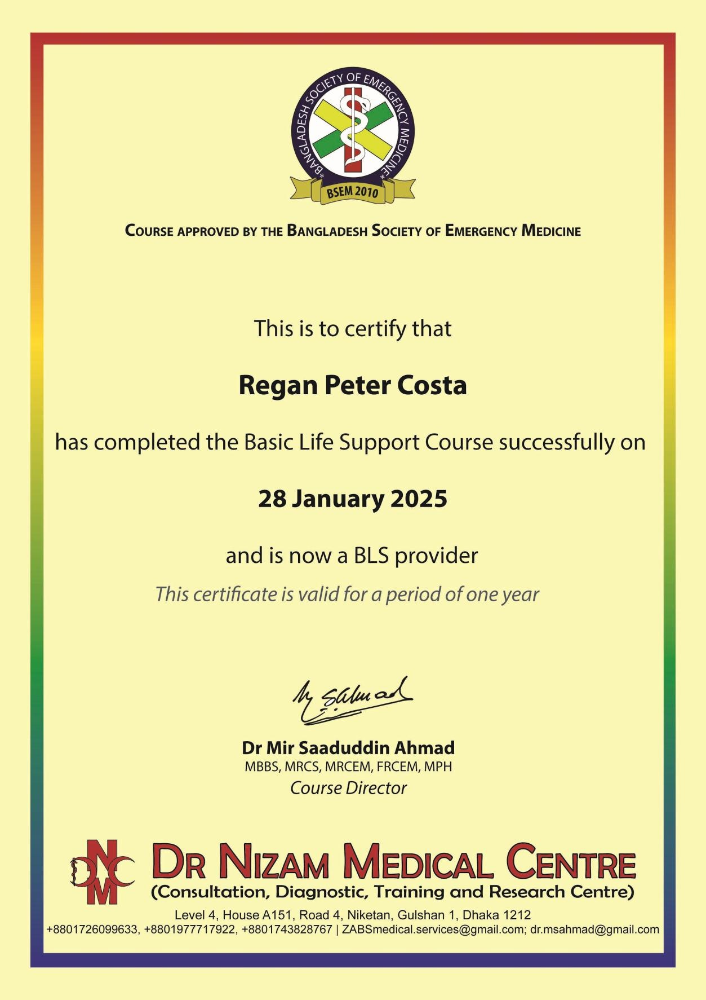
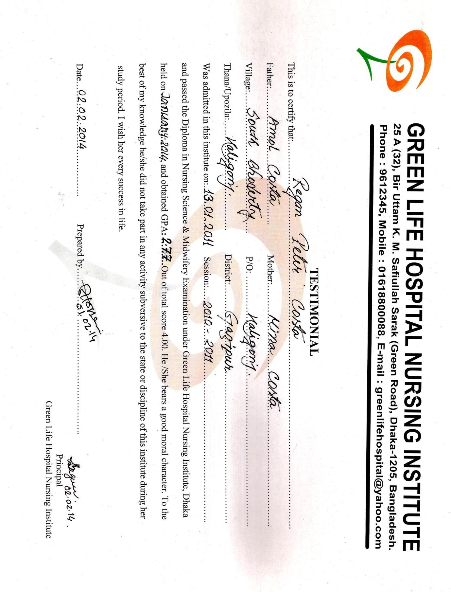
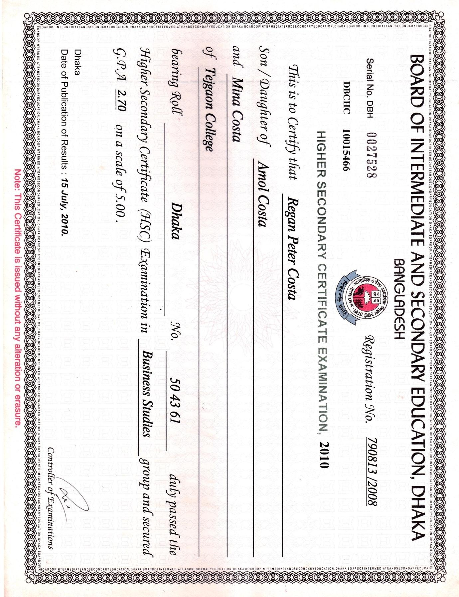
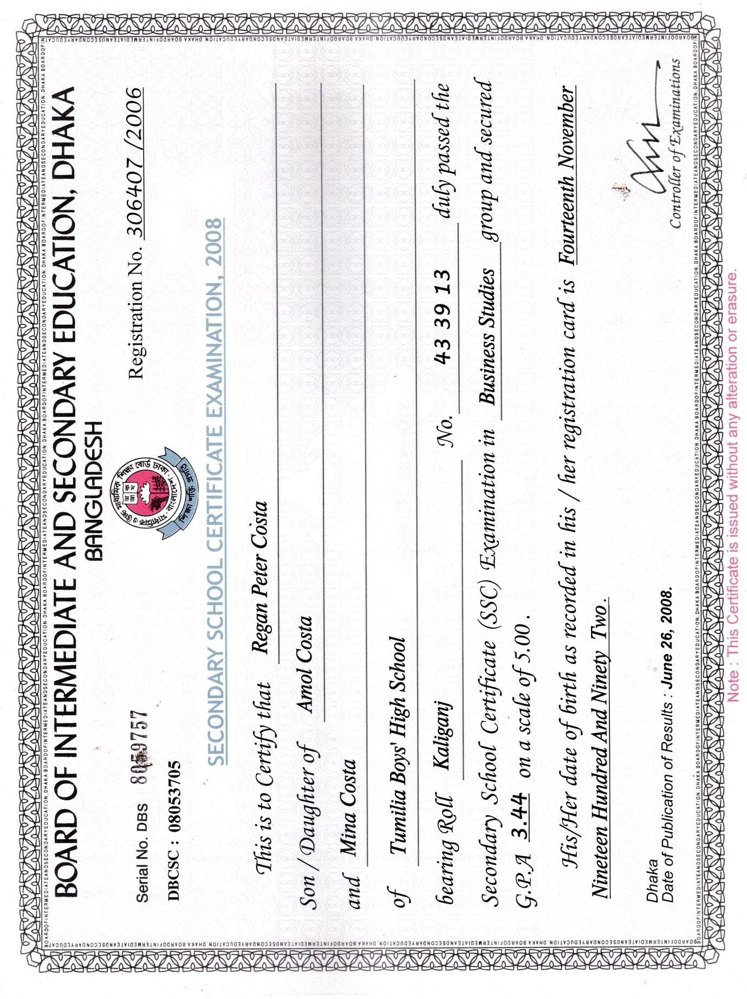
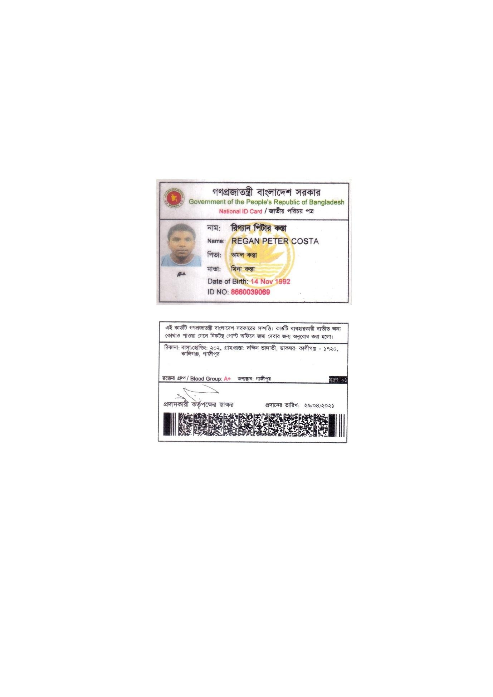
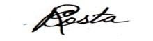

Specialized renal registered nurse with over a decade of continuous service in the high-volume hemodialysis unit of Square Hospitals Ltd. (Dhaka’s premier JCI-standard tertiary hospital). Proven mastery in independent operation of Fresenius, B. Braun, Gambro systems, bedside SLED in ICU, advanced AV Fistula/Graft cannulation, and sterile Permcath central line care.
Senior Staff Nurse, Hemodialysis
"He can run Fresenius, B-Braun, Gambro and SLED Haemodialysis Machine independently and able to manage common complication during Haemodialysis. He is expert in pricking Artery-Venous fistula as well as graft and HD catheter access..."
Proven independent execution across acute and chronic renal replacement therapies conforming to international clinical standards.
Independent priming, calibration, programming, and troubleshooting of major international dialysis systems:
Specialized high-precision access maintenance preserving patient vascular lifespan:
Rigorous catheter maintenance adhering strictly to Aseptic Non-Touch Technique (ANTT):
Rapid protocolized resuscitation for acute intradialytic physiological decompensation:
Monitoring dialysis water safety according to strict AAMI / ISO 23500 international directives:
Dialysis adequacy tracking and safe administration of complex renal therapeutics:
14+ combined years of verified inpatient medical and specialized hemodialysis service.
Delivers comprehensive specialized care for acute and chronic renal disease patients. Operates high-volume shifts across outpatient hemodialysis and critical care ICU bedside units.
Delivered bedside inpatient nursing care, surgical pre/post-operative monitoring, complex sterile wound dressings, and medication administration across high-acuity wards.
Completed intensive supervised rotations across General Medicine, General Surgery, Pediatrics, Emergency, Obstetrics & Gynecology, and Nephrology units.
All 10 authentic scanned documents of licenses, hospital recommendations, educational certificates, and certifications. Click any document to inspect in full resolution.

Dr. Mosaddeque Ahmed, MRCP (UK)

Registration No: 32750
Bangladesh Nursing Council (BNC)

BSEM Approved / Dr Nizam Medical

Green Life Hospital Nursing Institute

Dhaka Board • Tejgaon College (2010)

Dhaka Board • Tumilia Boys High (2008)

NID No: 8660039069
Passport Portrait Format

Verified Specimen Signature
Prepared for direct-hire recruitment across major international healthcare jurisdictions.
Eligible for direct application to NHS Foundation Trusts via NHS Jobs / Trac. Hemodialysis shortage exemption under UK Skilled Worker / Health and Care Visa.
Eligible for NMBI evaluation and placement into Beaumont Hospital (National Kidney Centre) or HSE acute dialysis units under Critical Skills Employment Permit.
Immediate eligibility for DataFlow PSV & Saudi Prometric. Direct hire for Diaverum KSA, DaVita KSA, and King Faisal Specialist Hospital with tax-free income & housing.
Ready for DHA (Dubai) and DOH (Abu Dhabi) Prometric CBT. Target employers: SEHA Kidney Care Abu Dhabi, Cleveland Clinic Abu Dhabi, Aster DM.
Direct qualification for Fahad Bin Jassim Kidney Centre (Hamad Medical Corporation) under Qatar Department of Healthcare Professions licensure.
Eligible for direct EB-3 permanent residency sponsorship via DaVita US, Fresenius Kidney Care US, or international staffing leaders (Avant / Conexus).
For recruitment inquiries, interview invitations, or verified document packets, reach out directly or download his official CVs below.
Choose between the Western ATS compliant version or the Gulf Executive format with embedded passport photo and GCC regulatory details.